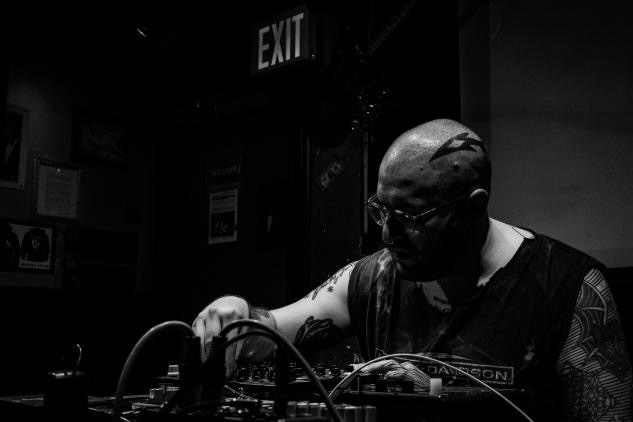

https://beingmadelikegod.bandcamp.com/
being made like god is an experimental noise project of
philadelphia based artist timothy fultano.
mangled loops give way to layers of dissonant drones and textures.
mangled loops give way to layers of dissonant drones and textures.